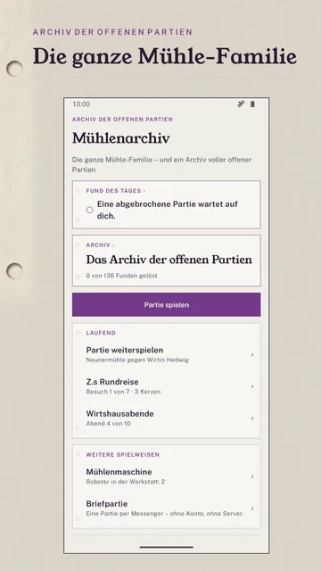
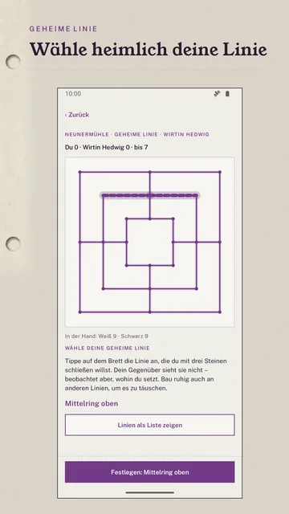
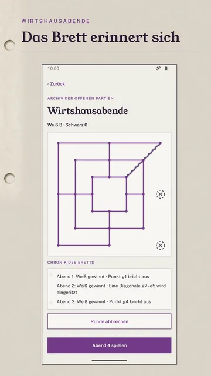
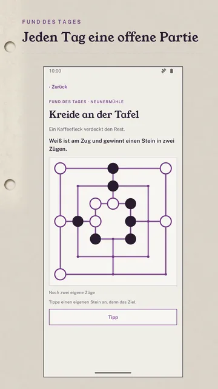
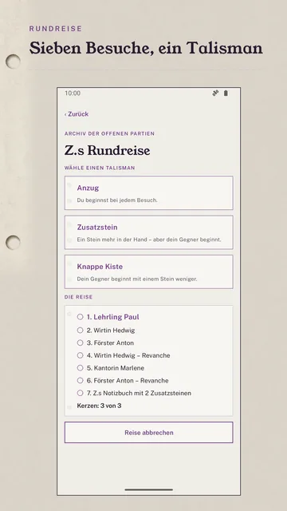
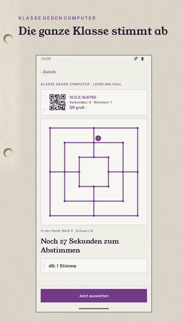
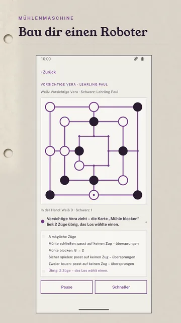
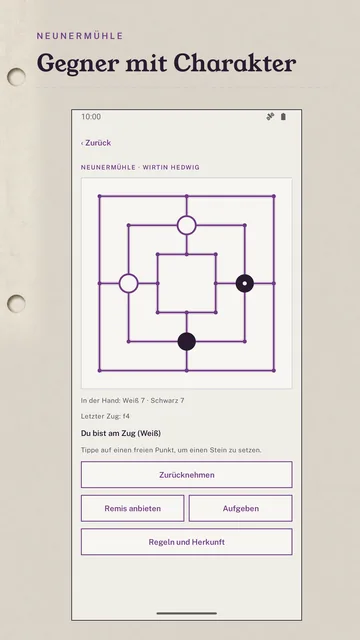

Gegner mit Charakter
Statt „leicht, mittel, schwer“: Wirtin Hedwig stellt dir die Wege zu, Förster Anton schlägt, wo er kann, Kantorin Marlene baut Zwickmühlen. In Dreiermühle und Achi wartet der Unbesiegbare, der jede Stellung kennt.
Mühle ist mehr als ein Spiel – es ist eine Familie. Sieben ihrer Mitglieder, Gegner mit Charakter und ein Archiv voller Partien, die mittendrin abbrechen. Du spielst sie zu Ende.
Erscheint bald bei Google PlayMühlenarchiv ist noch im geschlossenen Test. Diese Seite beschreibt die Testversion; bis zum Start kann sich noch etwas ändern.
Für Android ab Version 8. Im Unterricht stimmt die Klasse im Browser ab – mit jedem Gerät, das einen Browser hat, ohne App.
Weiß ist am Zug und setzt einen Stein. Wo schließt Weiß eine Mühle?
Im Keller einer alten Stadtbibliothek sammelt Ilse Mühlebretter: geritzte Dachziegel, Fotos aus dem Sand, Kerben im Wirtshausbrett, Turnierprotokolle. Viele Partien brechen mittendrin ab.
Jeder Fund ist eine abgebrochene Stellung mit Aufgabe, etwa „Weiß ist am Zug und gewinnt einen Stein in zwei Zügen“. Über 130 Funde in sieben Kästen, jeder mit genau einer Lösung – vom Programm bewiesen, nicht geraten.
Zwischen den Funden taucht immer wieder ein rätselhaftes „Z.“ auf. Wer die Kästen löst, kommt der Geschichte näher.
Gegen Figuren mit eigenem Stil, zu zweit an einem Gerät oder als Briefpartie über jeden Messenger. Dazu jeden Tag ein neuer Fund des Tages, für alle gleich – ohne Serien, ohne Druck.
Zu jeder Spielart stehen Herkunft und Quelle in der App. Ob man mit drei Steinen springen darf, ist in den Quellen strittig – du entscheidest per Schalter.
Statt „leicht, mittel, schwer“: Wirtin Hedwig stellt dir die Wege zu, Förster Anton schlägt, wo er kann, Kantorin Marlene baut Zwickmühlen. In Dreiermühle und Achi wartet der Unbesiegbare, der jede Stellung kennt.
Wer eine Mühle schließen kann, muss es – und hilft damit dem Gegner. Gewonnen hat, wer zuerst nur noch zwei Steine hat.
Jede Seite legt heimlich eine Linie fest. Schließ deine – oder rate die deines Gegenübers, bevor es so weit ist. Bluffen ausdrücklich erwünscht.
Baue Roboter aus Regelkarten, ordne sie und sieh zu, welche Regel welchen Zug entscheidet – mit Turnier gegen die Figuren. Ein Einstieg ins Thema Algorithmen, kein Programmierkurs und keine KI: Der Roboter lernt nichts, er tut, was die Karten sagen.
Zehn Abende an Z.s altem Brett. Wer gewinnt, hinterlässt eine Spur – ein Punkt bricht aus, eine Verbindung reißt, eine Diagonale wird eingeritzt. Das Brett erinnert sich.
Sieben Besuche auf Z.s alten Wegen, jeder schwerer als der letzte, mit drei Kerzen und einem Talisman vor jedem Besuch. Die Reise endet, wo sie begann: im Archiv.








Du kennst die Neunermühle und willst mehr: Zwölfer, Morabaraba, Lasker-Mühle – und Gegner, die nicht alle gleich spielen.
Jeden Tag ein Fund, über 130 im Archiv, jeder mit genau einer Lösung. Dazu eine Geschichte, die mit den Kästen weitergeht.
Klasse gegen Computer: Das Lehrergerät zeigt das Brett am Beamer, alle anderen stimmen im Browser über den nächsten Zug ab – im selben WLAN, ohne App, ohne Konto, ohne Namen. Die Mühlenmaschine zeigt, wie ein Algorithmus Regeln abarbeitet.
An einem Gerät am Tisch oder als Briefpartie: Jeder Zug wird ein kurzer Code, den du per Messenger schickst. Kein Konto, kein Server.
Keine Werbung, kein Abo. Geplant ist ein einziger, einmaliger Kauf.
2,99 €
Alle sieben Spielarten, alle Fundkästen samt der Partie von Z., der Unbesiegbare, die Wirtshausabende und Z.s Rundreise.
Geplanter Preis in Deutschland, Stand Oktober 2026. Die App ist noch nicht erschienen; verbindlich ist der Preis, den Google Play beim Kauf anzeigt.
Sobald der geschlossene Test bei Google Play abgeschlossen ist. Ein festes Datum gibt es noch nicht.
Nein. Mühlenarchiv läuft offline. Nur Klasse gegen Computer nutzt das eigene WLAN, damit die Klasse abstimmen kann – nichts davon verlässt das WLAN.
Die App gibt es nur für Android. Bei Klasse gegen Computer stimmen aber alle Geräte mit Browser ab, auch iPhones.
Kein Konto, keine Werbung, keine Datensammlung. Bei der Briefpartie schickst du deine Züge selbst über deinen Messenger; bei uns kommt nichts an. Die Einzelheiten stehen in der Datenschutzerklärung.
Nein. Käufe hängen an deinem Google-Konto. Auf dem neuen Gerät holt „Kauf wiederherstellen“ ihn zurück.
Deutsch und Englisch.
Schreib uns an kontakt@wunderkammer-apps.de – am besten mit der Quelle, die du kennst.
Mühlenarchiv erscheint bald bei Google Play – ohne Werbung, ohne Abo, ohne Konto.